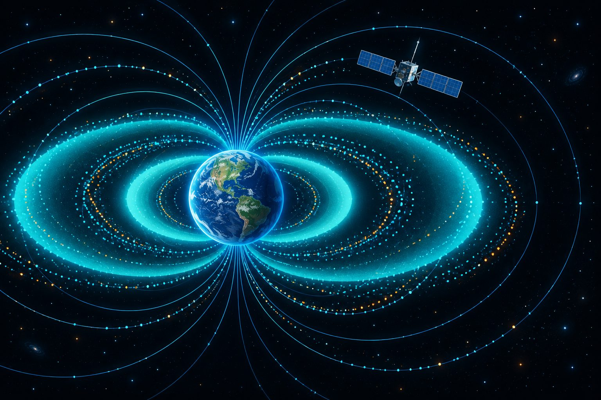

从 46.16 次/天谈起：一条可复算的轨道 SEU 率链路
一个口号式数字如何做到逐位可复现：SPENVIS CREME96 真实 GCR 谱 → IGRF-13 偶极截止刚度 → Lee 2014 三域 Weibull 截面 → 任务期积分。冻结基线的意义不在"46.16"本身，而在于任何改动都能立刻回答"和基线差多少"。
硬件可靠性研究者 · SRAM FPGA 辐射软防护
研究空间辐射环境下 SRAM FPGA 的单粒子软错误：位级翻转机理、ECC/TMR 缓解架构、擦洗调度与在轨辐射环境评估——数字可复算、来源可标注。

IGRF-13 地磁截止 → GCR / 捕获带环境 → 任务级 SEU 率；每个数字逐字段标注来源与假设。
LET / 入射角 / 落点 → 版图位图翻转分布与 SEU/MCU/Masked 分类——把"哪里脆弱"变成几何问题。
ECC / TMR / 分级恢复边界，scrub 调度与轨道 SEU 率联合视角的缓解设计。
STK Connect TCP 桥接：逐历元位置 → 截止刚度 / McIlwain L / SEU 率挂载 → 实时 JSON 与 3D 视角。
数据由本平台真实链路离线预计算：IGRF-13 偶极截止 → BO2020 GCR + O'Neill LIS → XC7VX690T 三域 Weibull。全部为 GCR-only 模型级估计；捕获带质子与 SAA 通量未计入（需 AE9/AP9）。
把一次单粒子打击拆成可点选的参数：LET、倾角、方位、落点 → 版图位图上的翻转分布与 SEU/MCU 分类。让"为什么这颗芯片在这个角度最脆弱"变成一眼可查的几何问题。
STK 出轨道、平台出辐射，中间只差一条 TCP 通道：逐秒拉取 Position，逐历元挂截止刚度、McIlwain L、环境判别与 GCR-only SEU 率——非冻结轨道一律标"模型级估计"。
一个口号式数字如何做到逐位可复现：SPENVIS CREME96 真实 GCR 谱 → IGRF-13 偶极截止刚度 → Lee 2014 三域 Weibull 截面 → 任务期积分。冻结基线的意义不在"46.16"本身，而在于任何改动都能立刻回答"和基线差多少"。
单组 Weibull 拟合整片截面会把 CRAM 主导的风险摊薄。按 Lee 2014 按域实测 σ 与官方位数（UG470/DS180/UG474）分域建模后，任务率、敏感区定位和 MCU 占比各自回到自己的量级上——完整参数见下方数据表。
1024 点、四通道、十级 radix-2 FFT 上，memory SECDED 与 arithmetic ECC 是连续且独立的恢复边界：同一 stage–phase interval 可在两个域中各容纳至多一个错误。"能恢复什么"由边界决定，不是口号决定——恢复电路本身无故障、错误落在声明的集合内，是论证的两块基石。
没有 Vivado 许可证也能做全工程回归：fp64_* IP 用自带 stub、xpm 用行为模型，73 个源文件编译+elaborate 冒烟，256×256 CS 成像链七级 pass 与 golden 逐位一致。testbench 自身的 off-by-one 与 RTL bug 必须分开记账。
帧级擦洗的修复收益取决于错误驻留时间窗，而擦洗本身消耗配置带宽并引入新的失效面。把 scrub period 放进与轨道 SEU 率同一张账上，才算回答"多久擦一次"——否则只是在两个未知量之间做手势。
ESA 迄今电子元件领域最大合同之一，面向在轨 AI 与自主处理的下一代抗辐射 FPGA 技术底座，CNES 与欧盟委员会配套支持。
欧洲首个设计-制造-封测全链路在欧盟境内的宇航级 SoC FPGA，瞄准 Galileo、Copernicus 及 IRIS² 星座的星载处理需求。
>500 MeV 质子流量创 GOES-16 上天（2016）以来最大增幅；任务团队首次以"太阳质子发射约束"保护星上航电——空间天气直接进入发射决策。
累积阻力冲量超出预报不确定度 5–6σ，全 LEO 星座累计损失约 27.7 亿美元任务寿命——强太阳周对低轨辐射与寿命预算的双重影响。
| 域 | LET 阈值 (MeV·cm²/mg) | 宽度 W | 形状 s | σ_sat (cm²/bit) | 位数 | 位数来源 |
|---|---|---|---|---|---|---|
| CRAM | 0.4 | 338.5 | 0.852 | 3.34×10⁻⁸ | 229,878,496 | UG470 配置位流长度 |
| BRAM | 0.1 | 87.5 | 0.893 | 3.82×10⁻⁸ | 54,190,080 | DS180 52,920 Kb×1024 |
| FF | 1.1 | 271.3 | 1.090 | 1.47×10⁻⁷ | 866,400 | UG474/DS180 CLB FF 数 |
| 轨道 | 环境 | 地磁截止 | 整机 SEU 率 | 性质 |
|---|---|---|---|---|
| MEO 20200 km / 55° | GCR（SPENVIS CREME96 实测谱） | 0.04–0.86 GV | 46.160314073644855 /天 | 冻结基线（逐位可复现） |
| GEO（Lee 参照） | GCR 太阳极小 + 100 mil Al | ≈0（无屏蔽） | CRAM 1.0e-7 · BRAM 5.2e-7 · FF 9.0e-8 /bit·day | 文献参照（GEO 近乎无地磁屏蔽） |
| 任意轨道（STK 联动） | GCR-only（BO2020+LIS） | 逐历元 IGRF-13 | 模型级估计，标注 provenance | 模型级（SAA/内带只标区域标志） |
SRAM FPGA 单粒子效应仿真平台：几何打击 / 轨道环境 / SAR 链路 / 效应总览 / 器件内部 / STK 实时，六模块一体的 Web 应用。
轨道辐射环境评估：SPENVIS CREME96 真实谱 + BO2020/AE8·AP8 + IGRF-13 截止 + 分域 Weibull，冻结基线 46.160314073644855 /day。
1024 点 FFT 容错架构研究：SECDED + arithmetic ECC 连续恢复边界，Yosys 资源评估 + Python 位级注入验证。
硬件可靠性研究者，关注 SRAM FPGA 在空间辐射环境下的软错误与缓解设计。做过的链路：RTL 故障注入 → 位图级打击仿真 → 器件截面建模 → 在轨任务率评估。本站笔记以工程可复算为准绳：数字给出配置、命令与 SHA，估计就标估计，证据就标冻结。